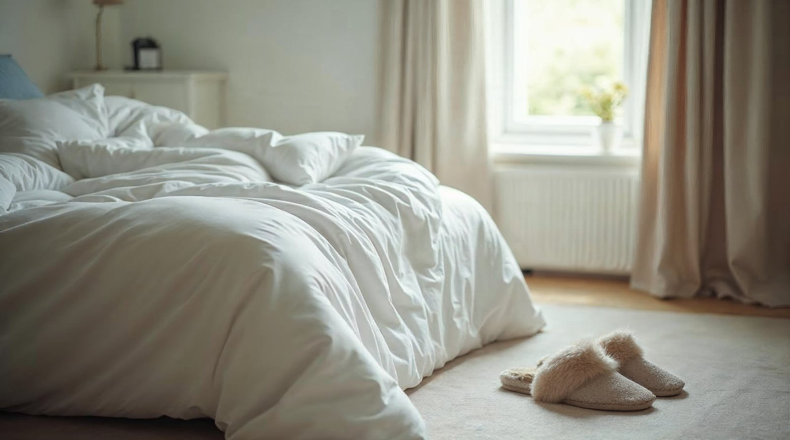
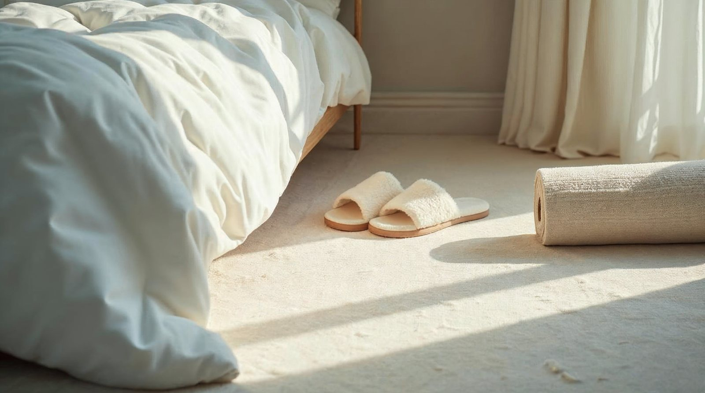
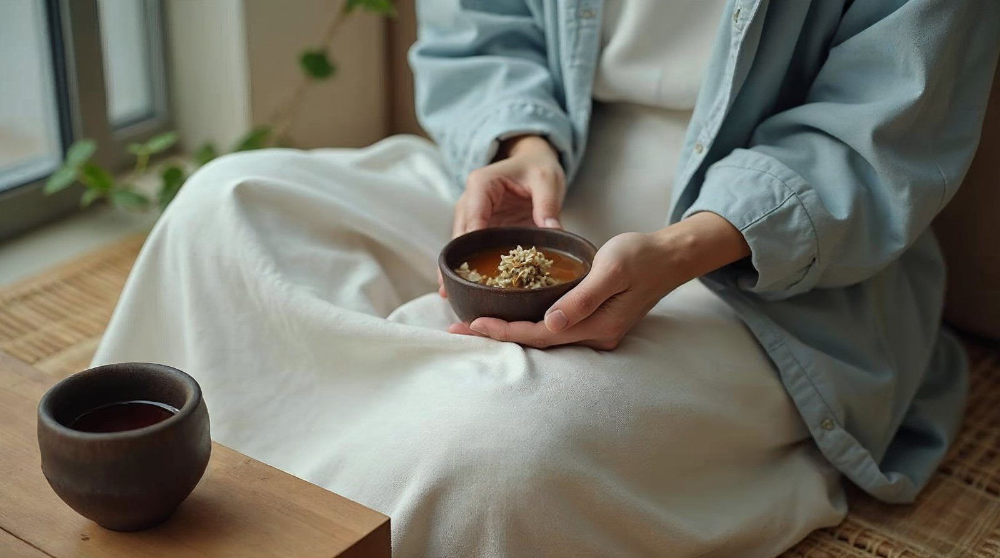
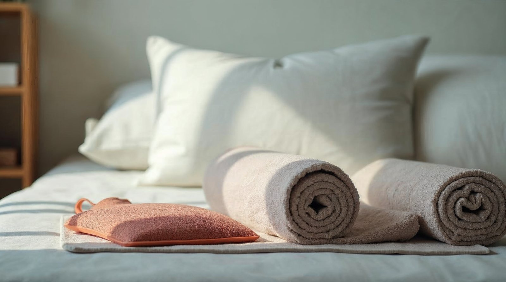

이종호 한의사 감수좋은꿈참사랑한의원 대표원장 (한의사 면허번호 19769)발행 2026-11-22 · 수정 2026-11-26
이 글의 차례
아침에 허리가 뻣뻣하다가 세수하고 몇 걸음 걷고 나면 풀린다면, 밤사이 오래 움직이지 않은 근육과 관절이 굳어 있던 경우가 많습니다. 다만 뻣뻣함이 30분 넘게 가는 날이 몇 주째 이어지거나 점점 심해진다면 류마티스내과 등 의과에서 다른 원인도 확인해야 합니다. 얼마나 오래 가는지, 움직이면 풀리는지가 첫 번째 단서입니다.
진료실에서 이런 말씀 자주 들어요. "원장님, 아침마다 허리가 나무토막 같아요. 세수하려고 숙이는 게 제일 무서워요." 그 말씀 들으면 저는 먼저 "그거 원래 그래요"라고 말씀드려요. 밤새 거의 안 움직였으니 아침에 굳어 있는 건 몸으로선 당연한 일이거든요.
그러니까 사실은, 아침에 뻣뻣한 것 자체보다 그게 얼마나 빨리 풀리는지가 더 중요한 거예요. 겨울 아침에 차 시동을 걸면 처음엔 엔진이 거칠다가 조금 지나면 부드러워지잖아요. 허리도 비슷해요. 문제는 예열이 점점 오래 걸릴 때예요.
굳은 것과 염증으로 뻣뻣한 것은 다른 얘기예요
저는 아침 허리를 볼 때 이 둘을 먼저 나눠요. 근육과 관절이 굳은 경우는 일어나서 움직이기 시작하면 몇 분, 길어도 30분 안에 대부분 풀려요. 낮에는 괜찮다가 오래 앉아 있으면 다시 뻣뻣해지는 정도고요.
반면 염증 때문에 뻣뻣한 경우는 30분이 넘도록 잘 안 풀리고, 쉬면 더 굳고 움직이면 오히려 조금 나은 느낌이 드는 경우가 많아요. 이런 날이 몇 주씩 이어진다면 의과에서 원인을 확인받는 게 먼저예요.
왜 이런 불편이 생길 수 있나요
- 자는 동안에는 몸을 거의 움직이지 않아 허리 주변 근육과 관절이 굳은 채로 아침을 맞을 수 있습니다.
- 너무 푹 꺼지거나 너무 딱딱한 매트리스, 맞지 않는 베개는 밤새 허리를 한쪽으로 기울게 만들 수 있습니다.
- 전날 오래 앉아 있었거나 무거운 것을 들었다면 그 피로가 다음 날 아침 뻣뻣함으로 나타나기도 합니다.
- 추운 밤 몸을 웅크린 채 자면 허리와 골반 주변이 밤새 같은 모양으로 굳어 있기 쉽습니다.
- 한의학에서는 몸이 찬 편인지, 잠이 깊은지도 아침 몸 상태와 함께 살핍니다.
왜 밤새 쉬었는데 오히려 더 뻣뻣할까요? 이상하게 느껴지시죠. 허리 주변 근육과 관절은 움직여야 부드러워지는 구조예요. 움직일 때 관절 사이 미끄러운 물기가 고루 돌고, 근육에도 피가 돌면서 따뜻해지거든요.
그런데 잠자는 예닐곱 시간 동안은 이게 거의 멈춰 있어요. 그러니 아침엔 기름칠이 덜 된 문짝처럼 삐걱거리는 거예요. 낮에 오래 앉아 있다 일어날 때 첫 몇 걸음이 뻣뻣한 것도 같은 이유예요.
여기에 전날의 피로가 겹치면 예열 시간이 더 길어져요. 하루 종일 앉아 있었거나, 무거운 걸 들었거나, 잠이 짧았던 날 다음 아침이 유독 힘든 이유죠. 그래서 저는 아침 허리를 볼 때 그 전날 하루를 같이 여쭤요.
나이가 들면서 예열이 조금씩 길어지는 것도 자연스러운 변화예요. 관절 사이 물기와 근육의 탄력이 젊을 때와 같을 수는 없거든요. 겁낼 일은 아니에요. 다만 그 변화를 알고 아침을 조금 천천히 시작하시면, 하루가 훨씬 덜 버거우실 거예요.
추운 계절에 더 뻣뻣하다는 분도 많아요. 방 안이 차면 몸이 웅크린 채로 밤을 보내기 쉽고, 아침에 이불 밖으로 나오는 순간 근육이 한 번 더 움츠러들거든요. 겨울엔 잠옷을 한 겹 더 입거나 허리를 덮는 옷을 입고 주무시는 것도 방법이에요.
비슷해 보이는 허리 불편은 어떻게 구분하나요?
아침에 허리가 불편하다고 다 같은 건 아니에요. 어떤 동작에서, 어디로 불편한지에 따라 살필 방향이 달라지거든요.
- 일어나서 몇 분 움직이면 풀리고 낮엔 괜찮다면, 밤새 굳은 근육과 관절 쪽인 경우가 많아요.
- 허리를 숙일 때 엉덩이나 다리 뒤쪽으로 당기거나 저린다면, 허리 디스크 쪽을 함께 살펴봐야 해요.
- 오래 걸으면 다리가 저리거나 무거워 쉬어야 하고, 허리를 숙이면 편하다면 척추관이 좁아진 쪽을 의과에서 확인해 보세요.
- 아침 뻣뻣함이 30분 넘게 가고 쉬면 더 굳는 날이 몇 주째라면, 염증성 질환을 의과에서 먼저 확인받는 게 좋아요.
이런 구분은 진료실에서 같이 하면 되니까 정확하지 않아도 괜찮아요. 어떤 동작에서 어디가 불편한지 기억나는 대로 말씀해 주시면 충분해요.
일어나기 전 누운 채로 해 볼 수 있는 순서는?
- 눈을 뜨면 바로 일어나지 말고 천장을 보고 누운 채 숨을 길게 몇 번 쉬기
- 발목을 위아래로 열 번쯤 까딱이고, 무릎을 세운 채 좌우로 천천히 눕혀 보기
- 한쪽 무릎씩 가슴 쪽으로 아프지 않은 만큼만 당겼다 놓기
- 옆으로 돌아누워 팔로 밀며 앉고, 침대 끝에 잠깐 앉아 있다가 일어서기
다 해도 2~3분이면 돼요.
출근 준비로 바쁜 아침이라면 알람을 5분만 일찍 맞춰 두고 이 시간을 이불 속에서 보내 보세요. 아프면 거기서 멈추시고, 아프지 않은 범위에서만 하시면 돼요.
먼저 이렇게 여쭙니다
- 뻣뻣함이 몇 분 정도 이어지나요?
- 움직이면 풀리나요, 오히려 더 아픈가요?
- 자는 자세와 베개, 매트리스는 어떤가요?
- 전날 오래 앉아 있었거나 무거운 것을 든 일이 있나요?
- 엉덩이나 다리 쪽으로 당기는 느낌이 함께 있나요?

예를 들면 이런 경우입니다
- 예를 들어 하루 대부분을 앉아서 일하는 직장인이 월요일 아침에 유독 허리가 뻣뻣한 경우, 주말에 늦잠을 자며 오래 누워 있었는지와 평일에 앉아 있는 시간을 함께 봅니다. 평일에는 한 시간에 한 번 일어나 허리를 펴고, 주말에도 일어나는 시간을 크게 늦추지 않는 것부터 권합니다.
- 예를 들어 독서실이나 스터디카페에서 밤늦게까지 앉아 있다가 새벽에 잠드는 수험생이라면, 앉은 시간과 함께 잠드는 시간이 들쭉날쭉한지 여쭙습니다. 일어나는 시간을 먼저 일정하게 맞추고, 쉬는 시간마다 자리에서 일어나 걷는 습관을 함께 정합니다.
- 예를 들어 겨울에 바닥에 요를 깔고 주무시는 어르신이라면 바닥에서 몸을 일으키는 동작 자체가 허리에 부담이 될 수 있습니다. 옆으로 돌아누운 뒤 무릎을 꿇고, 단단한 가구를 짚고 천천히 일어나는 순서를 함께 연습합니다.
- 예를 들어 주말에 몰아서 운동하고 월요일 아침마다 허리가 뻣뻣한 경우라면, 운동을 끊으시라는 말 대신 강도를 낮추고 주중에 짧게 나눠 하는 쪽을 같이 정해 봐요. 한 번에 세게 하면 몸이 따라가기 버거운 경우가 많거든요.

스스로 점검해 보세요
- 일어나서 세수와 양치를 마칠 즈음이면 뻣뻣함이 대부분 풀린다.
- 낮에 오래 앉아 있다 일어날 때도 첫 몇 걸음이 뻣뻣하다.
- 주말에 늦잠을 자거나 오래 누워 있던 날 더 뻣뻣하다.
- 이사, 여행, 바닥 잠처럼 잠자리가 바뀐 뒤로 시작됐다.
- 허리를 앞으로 숙일 때와 뒤로 젖힐 때 중 한쪽이 더 불편하다.
- 밤중에 아파서 깨거나 돌아눕기 힘들다.
- 엉덩이나 다리 쪽으로 당김, 저림이 함께 있다.
앞의 네 가지에 주로 해당한다면 잠자리와 앉는 시간을 조절해 보며 지켜볼 수 있는 경우가 많습니다. 마지막 두 가지에 해당하면 아래 '이런 증상은 먼저 확인이 필요합니다'를 먼저 확인해 주세요.
일상에서 먼저 해 볼 수 있는 것
- 일어나기 전 누운 채로 아프지 않은 범위에서 무릎을 가슴 쪽으로 천천히 당겨 10초씩 몇 번 풀어 주기
- 침대에서 일어날 때 옆으로 돌아누운 뒤 팔로 몸을 밀어 올리기
- 너무 푹 꺼지거나 너무 딱딱한 잠자리인지 점검하기
- 낮에 한 시간에 한 번 일어나 허리를 펴 주기
- 아침에 따뜻한 물로 샤워해 몸을 데운 뒤 움직이기
이렇게 여러 가지를 적었지만 다 하시라는 건 아니에요. 아침은 원래 바쁘잖아요. 그래서 저는 딱 하나만 부탁드려요. 일어날 때 벌떡 일어나지 말고, 옆으로 돌아누운 뒤 팔로 밀어서 천천히 일어나는 거예요.
최대한 천천히, 최대한 천천히요. 굳은 허리를 아침 첫 동작에서 한 번에 확 펴는 게 가장 부담이 크거든요. 딴 거는 편하게 하시고, 이거 하나만 같이 해 주시면 돼요.
잠자리는 어떻게 점검하면 좋을까요?
- 바로 누웠을 때 허리 아래로 손이 쑥 들어갈 만큼 뜨면 너무 딱딱하거나, 무릎 밑을 받쳐야 편한 경우가 많아요.
- 엉덩이가 푹 꺼져 몸이 V자로 접힌다면 너무 푹신한 쪽이에요.
- 옆으로 누울 때 무릎 사이에 얇은 베개를 끼우면 골반이 덜 비틀어져 편하다는 분이 많아요.
- 바닥에서 주무신다면 요를 한 겹 더 깔아 보고, 일어나는 동작은 가구를 짚고 천천히 하세요.
매트리스를 바꾸기 전에 이런 작은 것부터 해 보세요. 수건 한 장, 베개 하나로도 아침이 달라지는 분들이 꽤 있거든요. 바꾼 뒤에는 사나흘 써 보고 아침 뻣뻣함이 풀리는 시간을 비교해 보시면 돼요.
낮의 습관이 아침 허리를 만듭니다
아침 허리는 사실 전날 낮에 이미 준비되는 경우가 많아요. 하루 여덟 시간 앉아 있었다면 허리는 그만큼 같은 모양으로 굳어 있다가 밤을 맞는 거죠.
그래서 저는 아침 스트레칭보다 낮에 자주 일어나는 걸 더 권해요. 운동하지 말라는 게 아니라, 한 번 세게 하는 것보다 자주 약하게 움직이는 게 허리엔 훨씬 도움이 되거든요. 한 시간에 한 번 일어나 물 한 잔 마시러 걷는 정도면 충분해요.
한의원에서 함께 살필 수 있는 경우
- 아침에 일어날 때 허리가 뻣뻣한 경우 밤사이 자세와 근육의 긴장을 함께 살핍니다.
- 오래 누워 있으면 허리가 더 뻐근한 경우 수면 자세를 함께 살핍니다.
- 낮에 움직이면 풀리지만 아침에 다시 뻣뻣한 경우 생활 속 움직임을 함께 살핍니다.
- 아침 뻣뻣함과 함께 잠이 얕고 몸이 쉽게 차가워지는 경우 잠과 몸의 온기를 함께 여쭙습니다.
허리 때문에 오셨는데 잠과 손발 온도를 여쭤 보면 의아해하시는 분도 있어요. 저는 허리만 편하게 하려는 게 아니라 몸 전체를 좋게 하려는 거예요. 잠이 깊어지면 아침 몸이 덜 굳는다는 분도 계시거든요.
안 뻣뻣하다고 끝난 게 아니에요. 아침에 좀 편해졌다고 앉아 있는 습관이 그대로라면, 피곤한 주가 오면 또 같은 아침을 맞기 쉽거든요. 편해진 뒤에도 낮에 일어나는 습관 하나는 이어 가 주셨으면 해요.

첫 방문은 이렇게 진행합니다
좋은꿈참사랑한의원의 첫 진료는 대체로 아래 순서로 진행합니다.
- 이야기 듣기: 언제부터 뻣뻣했는지, 아침에 몇 분 가는지, 잠자리와 하루 앉아 있는 시간, 잠과 소화를 먼저 충분히 듣습니다.
- 맥과 혀, 배 살피기: 허리 때문에 오셨어도 맥을 짚고 혀와 배를 살펴 몸 전체의 상태를 함께 가늠합니다.
- 움직임 확인: 허리를 굽히고 펴기, 옆으로 기울이기, 누웠다 일어나기를 함께 해 보며 어느 동작에서 걸리는지 봅니다.
- 필요하면 초음파: 필요하다고 판단될 때 초음파로 아픈 부위의 근육과 힘줄을 살핍니다. 영상에 보이는 것과 실제 통증이 항상 일치하지는 않아 진찰 전체를 함께 놓고 판단합니다.
- 방향 정하기: 침·약침·추나 등 상태에 맞는 방법을 정하고, 귀가 전에는 아침에 해 볼 동작과 다음에 확인할 점을 알려 드립니다.

이렇게 기록해 오시면 상담이 쉬워집니다
- 아침 뻣뻣함이 풀리기까지 걸린 시간(몇 분)
- 자는 자세, 베개와 매트리스를 바꾼 시기
- 전날 오래 앉았거나 무거운 것을 든 일
- 복용 중인 약과 최근 받은 검사 결과
기록은 아침에 눈뜨자마자 휴대전화 메모에 한 줄이면 돼요. "뻣뻣함 15분, 어제 오래 앉음" 정도로요. 2주만 모아도 어떤 날 아침이 더 힘든지가 보이고, 풀리는 시간이 줄고 있는지 늘고 있는지도 한눈에 알 수 있어요.
편했던 아침도 같이 적어 주세요. 그 전날 무엇이 달랐는지 알면, 그걸 한 번 더 해 보면 되거든요.
얼마나 지켜보고, 언제 상담하면 좋을까요
- 뻣뻣함이 30분 안에 풀리고 낮에는 괜찮다면, 잠자리와 아침 동작, 앉는 시간을 바꾼 뒤 1~2주 동안 풀리는 시간을 적어 보며 지켜봅니다.
- 2~3주가 지나도 풀리는 시간이 그대로이거나 점점 길어진다면 상담을 받아 보세요.
- 아래 신호가 있으면 지켜보지 말고 바로 진료를 받습니다.
이런 증상은 먼저 확인이 필요합니다
- 아침 뻣뻣함이 30분 넘게 가는 날이 몇 주째 이어지거나, 손가락·무릎 같은 여러 관절이 함께 굳는 경우(류마티스내과 등 의과에서 먼저 확인)
- 다리로 뻗치는 통증이나 힘 빠짐, 저림이 함께 있는 경우
이런 신호가 있으면 한의원보다 가까운 병원이나 응급실을 먼저 찾으세요.
관련 글

여쭙는 것
- 뻣뻣함이 몇 분 정도 이어지나요?
- 움직이면 풀리나요, 오히려 더 아픈가요?
- 자는 자세와 베개, 매트리스는 어떤가요?
생활에서 해 볼 것
- 일어나기 전 누운 채로 아프지 않은 범위에서 무릎을 가슴 쪽으로 천천히 당겨 10초…
- 침대에서 일어날 때 옆으로 돌아누운 뒤 팔로 몸을 밀어 올리기
- 너무 푹 꺼지거나 너무 딱딱한 잠자리인지 점검하기
한의원에서 함께 살필 것
- 아침에 일어날 때 허리가 뻣뻣한 경우 밤사이 자세와 근육의 긴장을 함께 살핍니다.
- 오래 누워 있으면 허리가 더 뻐근한 경우 수면 자세를 함께 살핍니다.
- 낮에 움직이면 풀리지만 아침에 다시 뻣뻣한 경우 생활 속 움직임을 함께 살핍니다.
먼저 확인이 필요한 신호
- 아침 뻣뻣함이 30분 넘게 가는 날이 몇 주째 이어지거나, 손가락·무릎 같은 여러…
- 다리로 뻗치는 통증이나 힘 빠짐, 저림이 함께 있는 경우
한눈에 보는 표
| 구분 | 핵심 |
|---|---|
| 여쭙는 것 | 뻣뻣함이 몇 분 정도 이어지나요? 움직이면 풀리나요, 오히려 더 아픈가요? |
| 생활에서 해 볼 것 | 일어나기 전 누운 채로 아프지 않은 범위에서 무릎을 가슴 쪽으로 천천히 당겨 10초씩 몇 번 풀어 주기 침대에서 일어날 때 옆으로 돌아누운 뒤 팔로 몸을 밀어 올리기 |
| 한의원에서 함께 살필 것 | 아침에 일어날 때 허리가 뻣뻣한 경우 밤사이 자세와 근육의 긴장을 함께 살핍니다. 오래 누워 있으면 허리가 더 뻐근한 경우 수면 자세를 함께 살핍니다. |
| 먼저 확인이 필요한 신호 | 아침 뻣뻣함이 30분 넘게 가는 날이 몇 주째 이어지거나, 손가락·무릎 같은 여러 관절이 함께 굳는 경우(류마티스내과 등 의과에서 먼저 확인) 다리로 뻗치는 통증이나 힘 빠짐, 저림이 함께 있는 경우 |
자주 묻는 질문
아침 허리 뻣뻣함은 한의원에서 어떻게 살피나요?
뻣뻣한 시간, 자세, 생활 습관, 통증이 퍼지는 방향을 묻고 몸의 움직임을 보며 생활 전체와 함께 살핍니다.
아침에 스트레칭을 해도 되나요?
아프지 않은 범위에서 천천히 하는 가벼운 동작을 권합니다. 통증이 심해지면 멈추세요.
새 매트리스로 바꿔야 하나요?
정답이 정해져 있지 않아서 지금 불편한 점을 먼저 묻고 생활 속에서 조절할 수 있는 부분부터 살핍니다.
아침 뻣뻣함이 30분 넘게 가면 어떻게 하나요?
그런 날이 몇 주째 이어지거나 여러 관절이 함께 뻣뻣하다면 류마티스내과 등 의과에서 먼저 확인해 보시길 권합니다.
출근 전에는 시간이 없는데 언제 방문하면 되나요?
평일은 09:30~20:00(점심 13:00~14:00), 토·일·공휴일은 09:30~15:00(점심시간 없음)에 진료합니다. 아침 상태를 적어 오시면 다른 시간에 오셔도 함께 볼 수 있습니다.
추나나 침 치료의 보험 적용은 어떻게 확인하나요?
건강보험(또는 자동차보험) 적용 여부는 방문 전 전화로 확인해 주세요.
좋은꿈참사랑한의원은 재진 때 지난번 이야기부터 이어서 여쭙니다. 진료시간과 예약은 오시는 길에서 확인하세요.
어디서 상담받을 수 있나요?
좋은꿈참사랑한의원은 서울 동작구 만양로2길 2 신성빌딩 3층·5층(서울 동작구 상도동, 7호선 상도역 3번 출구 근처)에 있습니다. 한의사 3명(이종호 대표원장, 조영기 수석진료원장, 정원영 진료원장)이 진료합니다. 진료시간은 평일 09:30~20:00(점심 13:00~14:00), 토·일·공휴일 09:30~15:00이며, 방문 전 전화로 확인을 권합니다. 예약은 네이버 예약, 카카오톡 상담, 전화 02-815-7510로 받습니다.
이 글은 일반적인 건강 정보이며 개인의 진단이나 치료를 대신하지 않습니다. 증상이 있거나 복용 중인 약이 있다면 진료를 통해 확인하세요. 치료 효과는 개인마다 다를 수 있습니다.
작성 기준: 일반적으로 알려져 있는 건강 정보를 참고해 정리했습니다(대표원장 감수). 증상 기록은 1~2주 동안 하루 1회, 비슷한 시간에 적어 오시면 지난 상태와 비교하기 쉽습니다.